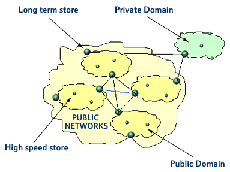

Opportunities and potential solutions
Autonomous management
It would be desirable if much of the management of a large-scale distributed system could be carried out autonomously based on local information, this would aid both manageability and scalability of the system. To achieve this ambitious target, a number of initiatives are being pursued which when collectively applied will provide a real step forward in autonomous management. These include the following.
More embedded information
Distributed systems function by issuing method calls to remote objects or components; the structure of the calls being defined in an interface definition language (e.g. CORBA IDL or Microsoft's MIDL). A very simple example of two CORBA IDL interfaces specified within one module is shown below. Here the two interfaces, Account and Account Manager are shown supporting one operation each, balance() and open(). The open operation allows a name to be specified and returns a reference to an Account interface. Calling balance() on this interface returns the value of the balance for the account.
module Bank { name of the moduleinterface Account { name of the interfaceinterface AccountManager { name of the interfacefloat balance (void ); operation for obtaining the balance
};
};Account open (in string name); operation for opening an account with a specified name.
};
This basic example illustrates the complete lack of non-functional information such as the resources which are required for the object to run, where the object is located, or what local policies are in force. The lack of such information not only severely limits the use of the object, but also inhibits distributed system management opportunities.
In order to address these issues and work towards the building and management of systems locally, much more information needs to be available at the object or component level. We believe that it is necessary for every object in the distributed system to have an associated metadata description that will describe all of the functional and non-functional properties in a standard way. We are studying the description of metadata in XML (the extensible mark-up language) [4] that allows the correct selection of components to build a distributed application, and also carries local management policies again described in XML which will aid decentralised management.
XML is a World Wide Web Consortium
(W3C) initiative and is a simplified derivative of the standard generalised
markup language (SGML). Although the XML specification is owned by the
W3C, many other vendors provide backing and have submitted extensions
to the XML development process. XML began in the document publishing world
and the original purpose was to provide a presentation-independent mechanism
to create self-describing documents. The attractions of XML for object
description are the provision of an entire infrastructure for parsing
and validation of documents. It provides strict syntax description and
error-handling facilities, and it allows users to define their own vocabularies.
Additionally, XML is machine readable, human readable and is standardised.
This greatly enhances the use as a means of communicating information
between businesses, between heterogeneous computer systems and between
different languages. The XML descriptions of objects in our proposed distributed
world are structured documents; the syntax being specified by the XML
standard, which must be followed in order for the result to be considered
well formed. In addition the vocabulary in which the document is written
is specified and the vocabulary tells us which tags are allowed and the
attributes of those tags and thus describes the structure of our documents.
The current mechanism for specifying the complete structure of an XML
document is based on the use of Document Type Definitions (DTDs); these
are the only formally approved mechanism for validating XML documents.
However DTDs are likely to be short lived as they are written using a
syntax that is not XML, and there is great interest in replacing today's
DTDs with an XML - based vocabulary for describing metadata. Our initial
research has concentrated on the use of DTDs as they are the only standardised
method currently available, but the approach can be generally applied.
One initial example of the use of this proposed approach would be an enhanced trader capability in a system (figure 2). A user of the system can select an application and the application's metadata will include any hardware requirements necessary to support the application. The metadata may be used to locate a suitable hardware terminal to allow the user to run the application, or the metadata describing the resource availability of the user's terminal will be added to the application's requirements and used to select an appropriate application instance to download and run. The composite user requirement and hardware resource availability will be used to rank the suitability of available applications. At this point for example, the user may express a preference for components from a certain supplier, the selected application may then be downloaded to the users machine and used. If the application is too large to run on a user terminal, the computing node metadata and application metadata may be used to select an appropriate node in the network for the execution of the application. In this case the user's metadata may be used to provide a list of commercial relationships or user permissions that govern where in the network, and on which machines with stated owners, this user may execute applications. All of these decisions are local to the user, the application and nodes involved; note there is no centralised trader.
|
|
|||||||||
|
|||||||||
|
|
|||||||||
Fig. 2 An example of an enhanced trader
Are there any issues with our metadata approach described above?
Here emphasis is very much on flexibility and extensibility; the only definite requirement in the proposed metadata is information equivalent to an existing IDL definition, allowing the construction of communication end-points. The size of the metadata file associated with an object will depend very much on the functionality and potential role of the object in the system as a whole. Small local objects will require minimal metadata as their scope will be limited and the user of such code may well be the developer. Larger more functional objects or components will hopefully have a richer set of metadata that allows more efficient location and use of their capabilities together with increasing levels of autonomous management. Thus there will be a trade-off between the richness of the metadata, and hence the size of the stored information, and the functionality of the object. Inevitably more information will be stored in the whole system, but this storage will be distributed and will not impose too great an overhead on any single node in the system. Future work will concentrate on strategies for the efficient storage, indexing and retrieval of the metadata information.
Event hierarchyMultiservice IP-based networks are growing rapidly to global dimensions, in order to deal with the size and complexity of these networks much of the management task should be automated and carried out autonomously. There is a requirement for flexible scalable management systems in order to maintain efficient network operation and the scale of the task necessitates a distributed solution. Any centralised management solution will represent a bottleneck, impacting on system performance, and will be a single point of failure compromising system reliability. Event-based management is attractive for large-scale distributed systems as the interaction between components occurs asynchronously. This simplifies the construction of autonomous systems based on independently executing components on a wide range of platforms. In such systems, a high volume of event messages are generated by a large number of sources in real time. In order to sensibly manage such a system, events need to be aggregated, filtered and have their relative importance changed as the system evolves. We propose an information management architecture that has a hierarchy of event processors in the form of store-and-forward information stores. All events generated in the system are classified by both their propagation characteristics, and their storage requirements. Two types of store are used at different points in the hierarchy, the choice of store being determined by the complexity of querying required versus the storage requirement.
High-speed stores offer a load-balancing capability together with traffic management and some initial filtering and aggregation. The higher level, more complex stores have greater data processing capabilities and longer term storage. Figure 3 shows an example of a network making use of the two types of event stores. We believe that this flexible solution is able to accommodate the requirements of our distributed management architecture.
Each of the entities in the managed system is capable of acting autonomously using a combination of local knowledge and local management policies. These policies will form part of the object's metadata and will be supplied by remote managers. In order to make efficient use of network bandwidth for both events and policy distribution, the architecture makes extensive use of network broadcast. There are a number of additional communication requirements that must also be considered:
 |
Fig. 3 Network of event stores, showing the two types used.
The ability to filter and aggregate events together with event classification are the key enablers of the scalability of this approach. At any information server in the hierarchy some of the incoming events will be handled locally according to local policies, and any duplicate events will be aggregated, reducing load on the event store. Events that need onward propagation will be ranked in priority order with expedited delivery of high priority events. At every server the incoming event stream is reduced leading to lower traffic in the system and the ability to coe with a larger number of attached users.
Figure 4 shows typical characteristics of a server under increasing load. The throughput and response time of a simple CORBA server were measured as the incoming request rate increased. Requests were generated by a number of clients, according to Poisson statistics. It can clearly be seen that as the throughput saturates, response time rises rapidly. This is predicted by standard queuing theory. The rapid onset of the poor response time makes it difficult to determine when to take remedial action simply by monitoring the server performance. The precise point at which the server saturates depends on the processing power and the network bandwidth. If these are sufficient, the server can maintain adequate performance. However, it remains a single point of failure with the capability to cause failure of the whole system.
|
|
||||||||
|
||||||||
Fig. 4 Server response time and throughput verses input load
In our proposed hierarchical system discussed above, the performance of the individual event stores at each point in the hierarchy will still have the same characteristics. Due to the local handling of some events, aggregation and buffering, the performance of the system for a fixed network capacity and processor speed will be increased. The improvement in system performance obtained from the hierarchical arrangement will depend strongly on the percentage of incoming events that can be dealt with locally and thus on the policies specified by the managers and users of the system. Obviously the higher the percentage of local management the more effective is the hierarchical structure in handling large volumes of low-level events.
Communication style
In our view, the basic communications mechanisms provided in most distributed programming environments are too restrictive and inflexible. They are all essentially based on synchronous Remote Procedure Calls (RPCs) which send a request and wait for an acknowledgement that the required action has been completed. This approach is popular because all component interactions whether in-process or distributed follow the same familiar model. This may be appropriate for interactions within a single management domain, such as a local area network but will not be true in the general case.
Future multiservice networks will support a wide range of media types with different characteristics carried on a heterogeneous physical infrastructure which will include both fixed and wireless components with very different capabilities. In a dynamic environment it is impossible to know exactly which links will be involved in a particular service instance, so the 'one size fits all' approach of RPC-based communications will be inadequate.
In addition, different applications have different requirements for communications. In the traditional clientserver model a single thread of control - driven by the client - passes through a number of servers each of which sequentially performs some specific function. In this case the RPC model is ideal, providing a guarantee of the progress of the task at each stage. However, in an application involving activities that can be carried out in parallel - computationally intensive modelling, for example - the imposition of explicit two-way synchronisation on each communication is unnecessary and degrades performance. In these cases asynchronous message passing is preferred. The developer is forced either to emulate this communication style in RPC terms, which is clumsy and inefficient, or to move to a messaging-based approach and lose the considerable benefits of the distributed object environment. Most distributed applications do not have a single natural communication style, because different aspects of their operation have different characteristics. This is particularly the case if applications are to be composed from reusable components. Forcing components to be divided into groups based on their communication characteristics, results in a serious loss of flexibility.
The application developer should be empowered to use their knowledge of the requirements of the application and the underlying network capabilities to specify suitable communications protocols, independent from the function of the application components. This is a significant departure from what is offered by today's commercial products.
An example might be an Internet based video player (figure 5). The video stream itself would use a media streaming protocol for delivery to the user. The user would have standard video control capabilities (play, pause, stop, etc) using synchronous requests so that one action is completed before another may be initiated. Usage metering records would be sent to a billing system using a reliable asynchronous protocol which stops the sender application blocking while waiting for acknowledgement and allows the billing system to buffer incoming messages.
|
|
|||||||||
|
|||||||||
|
|
|||||||||
Fig. 5 Multimedia animation sequence showing a video player, control and billing protocol stacks in use
There are number of research groups looking at various ways of overcoming the limited communications style of today's distributed object technology. A particularly promising approach allows protocol stacks to be assembled from pre-built components either statically when the application is configured, or dynamically, when a service is requested at run time. This allows a single distributed application to use a variety of different communication styles between its components and to adapt its behaviour to the network environment.
A key feature of future distributed applications that can also be provided using dynamic protocol stacks is the ability to customise behaviour according to the capabilities of the terminal equipment being used. An example of this is a multimedia conferencing application where some participants have access to high-bandwidth video terminals, some to laptop computers with a low-bandwidth mobile connection and others to a telephone. The content required by each terminal type can be configured at run time by selecting the appropriate protocol blocks. The same modular approach to protocols provides a new and extremely flexible approach to building distributed applications delivering reuse of components supporting a wide range of generic network features including security, multicast, differentiated quality of service and mobility.
Click here to to read more about the implementation of an architecture for dynamic transport protocol stacks.
© Copyright British Telecommunications plc 1999